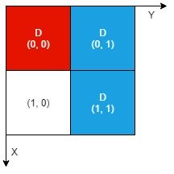

| Category | Difficulty | Likes | Dislikes |
|---|---|---|---|
| Algorithms | Medium | 225 | 204 |
imc
There is an n x n 0-indexed grid with some artifacts buried in it. You are given the integer n and a 0-indexed 2D integer array artifacts describing the positions of the rectangular artifacts where artifacts[i] = [r1i, c1i, r2i, c2i] denotes that the ith artifact is buried in the subgrid where:
(r1i, c1i) is the coordinate of the top-left cell of the ith artifact and(r2i, c2i) is the coordinate of the bottom-right cell of the ith artifact.You will excavate some cells of the grid and remove all the mud from them. If the cell has a part of an artifact buried underneath, it will be uncovered. If all the parts of an artifact are uncovered, you can extract it.
Given a 0-indexed 2D integer array dig where dig[i] = [ri, ci] indicates that you will excavate the cell (ri, ci), return the number of artifacts that you can extract.
The test cases are generated such that:
4 cells.dig are unique.
Example 1:
Input: n = 2, artifacts = [[0,0,0,0],[0,1,1,1]], dig = [[0,0],[0,1]]
Output: 1
Explanation:
The different colors represent different artifacts. Excavated cells are labeled with a 'D' in the grid.
There is 1 artifact that can be extracted, namely the red artifact.
The blue artifact has one part in cell (1,1) which remains uncovered, so we cannot extract it.
Thus, we return 1.Example 2:

Input: n = 2, artifacts = [[0,0,0,0],[0,1,1,1]], dig = [[0,0],[0,1],[1,1]]
Output: 2
Explanation: Both the red and blue artifacts have all parts uncovered (labeled with a 'D') and can be extracted, so we return 2.
Constraints:
1 <= n <= 10001 <= artifacts.length, dig.length <= min(n2, 105)artifacts[i].length == 4dig[i].length == 20 <= r1i, c1i, r2i, c2i, ri, ci <= n - 1r1i <= r2ic1i <= c2i4.dig are unique.